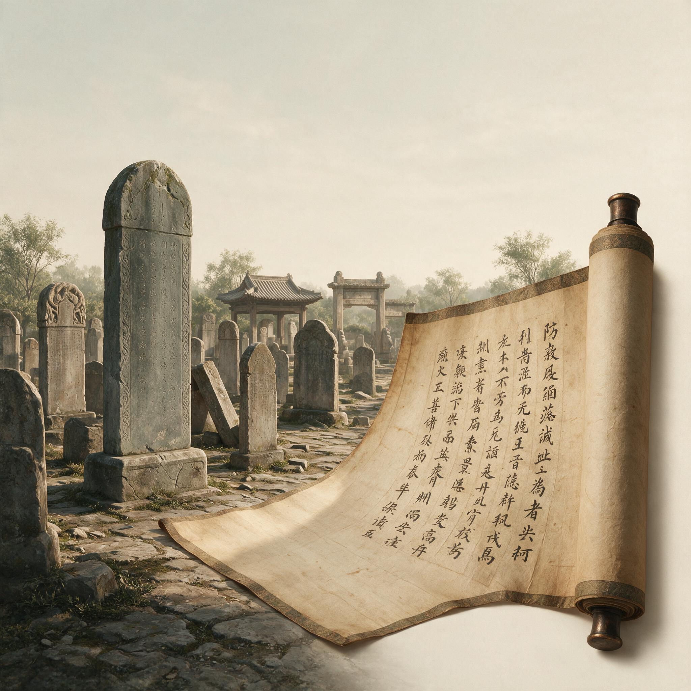

第 27 章
碑林与纸卷
建宁三年三月十七日，崔寔于东观值房收到涿郡急递的讣告木牍，其父崔瑗病逝。木牍仅寥寥数字，墨迹因信使汗渍浸润已略显模糊，他反复辨认两遍方确认。当日下值后，他怀揣木牍沿东市归寓，途经纸铺时见数名太学生怀抱新到的南郡纸卷而出，纸面在春日斜照下泛出浅藤黄色。其中一人唤他“崔郎”，他颔首未停步。彼时他忽念及父亲平生著述繁多，存佚几何，此念转瞬即逝，旋即被丧仪讣告、归乡行程等诸般事务淹没。
那是汉桓帝延熹年间的事了。确切年份崔寔后来不太愿意去记。他只知道，从洛阳回涿郡的路上，他在传舍里打开父亲留下来的几卷手稿，有写在简上的，有写在帛上的，也有写在纸上的。最早的一卷纸稿已经发脆，边缘碎裂，字迹褪成淡灰色，但还能辨认。
那是父亲崔瑗四十岁左右写的一篇《南阳文学官志》序言草稿，纸的质地粗糙，纤维粗大，能看见未捣碎的麻筋。崔寔对着那卷旧纸坐了很久。纸是从宫里的尚方署流出来的——父亲在注文中提到过，说这种纸是“尚方新制”，得之不易，特意用来写最重要的草稿。
那是蔡伦死后第十年。蔡伦在元兴元年（105年）将改进造纸术的成果报告给皇帝，用树皮、破布、麻头和鱼网这些廉价之物造纸，大大降低了成本。崔瑗写那行注的时候，蔡伦的名字还没有被刻进史书，造纸术也还没有从宫廷作坊散入郡县。纸仍然是一件需要特意提及来历的稀有之物。
现在崔寔自己已经用了二十多年的纸。他书案上堆着的纸卷，有南郡的、陈留的、泰山郡的，还有洛阳本地纸坊仿制的尚方纸。他不像父亲那样在注文里特意标明纸的来历。纸就是纸。
写坏了，翻过来在背面写；涂改太多，揉成一团扔进废纸堆，再抽一张新的。他已经习惯了纸的轻，习惯了墨在纸面上洇开的细微阻力，习惯了把一卷纸夹在腋下走到哪里带到哪里。
这种习惯让他几乎忘了，在他祖父崔骃那一代，一个士人如果想写一篇超过三千字的长文，光是准备竹简就要花去几天工夫——破竹、杀青、编连，每一片简只能写两行字，错了要用刀刮，刮多了那片简就废了。祖父写《达旨》时，据说用了将近两百片简，编成三卷，重得一个人搬不动。那篇文章现在传抄在纸上，不到二十页，薄薄的一叠，崔寔可以把它塞进行囊，在马背上读。
但这并不是说纸已经取代了简帛和碑石。崔寔比任何人都清楚这一点。他回到涿郡料理丧事的第一天，族中的长辈就把他叫到祠堂里，商议为父亲立碑的事。祠堂里坐着七八个人：崔氏宗族的族长、两位族老、父亲生前的两位门生、还有从邻近县赶来的故吏。他们面前摆着一片磨光的石碑石样，半尺见方，石色青灰。族长开口便问碑文谁来写。所有人都看崔寔。他低着头，看着那片石样。石头表面光滑如镜，倒映着祠堂梁上的灯火。他想说，他已经开始在纸上写碑文稿了。
但那一刻他说不出来，因为石头和纸的差异忽然变得无比具体：纸上的字可以改，可以抹掉重写，可以整段删去；石上的字一旦凿下去，就永远留在那里了。父亲的一生要凝固在这块石头上——哪几件事值

碑林与纸卷共存的象征画面
AI 生成插图，非史实影像。
得刻，哪几句话配得上铭文，家族世系怎么排列，用韵用哪个韵，每一个字都要在纸上反复推敲，直到再无歧义，才能交付石工书丹。纸是试探，石是判决。他点了点头，说：“我来写。”
之后的三个月里，崔寔的案头始终并排放着两卷纸。一卷是碑文稿，从世系、官历、政绩到铭辞，他改了不下十遍。另一卷是他在洛阳就已经动笔的《政论》——这部书他已经写了两年，纸稿积了厚厚一摞，有些篇章已经誊清了，有些还是草稿，墨迹上压着朱笔的批注，批注上又叠着墨笔的改文。
两卷纸并排躺着，像两种完全不同的写作生命。碑文稿越改越紧，每一个字都被他在嘴里咀嚼过，吐出来，再咽回去。他写父亲在济北相任上整顿亭障、蠲免杂赋的事，措辞要雅正，口气要庄重，不容丝毫私情。碑文不是写给自己的，是写给州郡官长、过往士人、后世子孙的。它要立在墓道旁，立在官道侧，立在陌生人的目光里。它必须把崔瑗这个人从血肉之躯中剥离出来，变成一段可以铭刻的官历，一篇可以歌咏的颂诗。纸上的每一次删改都是在为这种剥离做准备。
而《政论》却是另一回事。他写《政论》时，心情完全不同。他可以尖刻，可以愤懑，可以把一腔不合时宜的忧患倾泻在纸上。
他写“今州郡之吏，皆非其人”，写“豪右兼并，贫者无立锥之地”，写“刑罚不中，则民无所措手足”。这些句子写在纸上，墨迹淋漓，笔锋直下，有时写到激动处，纸被笔尖戳破，墨汁渗透到下一层。他把这些纸卷堆在案头，像堆着一堆没烧完的火炭。
它们不能刻在碑上。碑刻的公共性太重了，它会立刻变成政治事件。纸却可以藏起来，可以只给信任的人看，可以传抄而不具名。纸的轻给了崔寔一种错觉——他仿佛不是在对朝廷说话，而是在对着一张白纸说话，而这张白纸将来可能会落在某个素未谋面的读书人手里，被他在灯下一字一句地读。
这种双重写作持续了整整三个月。白天他处理丧事、接待吊客、与石工商量碑材的尺寸和运法；晚上他坐在灯下，左手边是碑文稿，右手边是《政论》稿，常常写着写着就把两边的纸稿弄混了。有一次他把《政论》里一段批评州郡举荐制度的文字不小心夹进了碑文稿，第二天早上才发现，惊出一身冷汗。那段话若是凿到碑上，崔氏恐怕要在涿郡惹出大麻烦。他把那段纸抽出来，对着它看了很久。
同样的字，写在《政论》纸卷上，是针砭时弊的直言；刻在碑石上，就成了挑战朝廷用人制度的反书。
同样的字。同样的墨。在不同的载体上，它们是完全不同的东西。碑石不会替你保密。石头是公开的，是永久的，是不可修改的。它的物理属性决定了它所承载的文字必须是经过反复审查的、无懈可击的公共语言。
纸卷却不同。纸可以折叠，可以封缄，可以藏在箧中。纸上的文字可以涂改，可以增删，可以推倒重来。纸是私密的、暂时的、可以被修正的。
这两种物质属性的差异，在崔寔的案头被放大成两种完全不同的知识实践：碑刻是定谳，纸卷是试探；碑刻是终稿，纸卷是过程；碑刻是对死者的总结，纸卷是对生者的延伸。
他到后来才明白，东汉士人文化之所以在他这一代呈现出与前代截然不同的面目，正是因为这两种媒介开始同时运作，形成了一种微妙的双轨制。在他祖父崔骃的时代，士人的文字表达几乎只有两条路：要么写在简帛上，成本高昂，传抄困难，绝大多数私人著述只能在小圈子里流传；
要么刻在碑上，但那要等人死了以后，由门生故吏集资运作，本质上是一种公共纪念仪式，而非个人思想的表达。简帛时代的知识传播是缓慢的、昂贵的、被物质条件严格限制的。一个士人穷尽一生写下的东西，很可能因为简牍朽坏、帛书昂贵、传抄人力不足而随人湮灭。崔骃写了不少文章，如今存下来的不过寥寥数篇，其余的都散佚了——不是因为没人想保存，而是因为每一份副本都要耗费大量竹简和抄写时间，没人能承担这种成本。
纸张改变的是成本结构。崔寔在洛阳时算过一笔账：抄一部《左氏春秋》全文，用竹简大约需要六百片，一个熟练的书佐要抄两个月，简材成本加上人工，足以让一个中等之家倾尽财力。用纸抄，只需不到两百张，一个书佐半月可成，成本不及竹简的三分之一。这个差价决定了谁能读书、谁能拥有书、谁能写书。当一部书的传抄成本降到一定阈值以下，私人藏书就不再是世家豪族的专利，私人著述也不再是传世无望的奢侈。这个变化发生的时间窗口，恰好与蔡伦造纸术扩散的周期重合。
蔡伦死后的三十年间，造纸技术从尚方署流入洛阳周边的官府作坊，又通过郡县掾属、商贾贩运和工匠流动，逐渐在陈留、南阳、南郡、泰山等地形成区域性的纸坊集群。纸的产量增加了，价格下降了，品质也稳定了。南郡纸用藤汁加浆，纸面光滑，墨不洇散；陈留纸纤维较粗，但韧性好，适合长途转运；泰山纸色暗，价格最低，多为贫士所用。不同产地、不同档次的纸在市场上形成了自然的分工，符应着不同的使用需求。这种多样化的供给体系，让纸从宫廷贡品变成了士人日常文具。崔寔在东市纸铺看到的那批南郡纸，就是这条供给链上的一个普通节点。
但纸的普及并没有消灭碑刻。恰恰相反，在崔寔所处的桓帝、灵帝时期，东汉的立碑之风达到了前所未有的高峰。这两个现象看似矛盾，实则互为因果。纸张降低了写作和传抄的门槛，使更多的士人能参与文字生产，从而产生了更多的文本——书信、注疏、议论、诗赋。这些文本中的一部分，经过筛选和沉淀，最终被刻上石碑，成为那个时代公共文化的纪念碑。
纸张是文字的生产车间，碑刻是文字的陈列馆。没有纸，碑文的数量和质量都不可能达到那样的高度；没有碑，纸上的文字就缺少了一条通往后世的正式通道。
崔寔在撰写父亲碑文的过程中，亲身体验了这两种媒介的协作关系。碑文是在纸上起草、修改、定稿的。从世系考证到官历核实，从措辞推敲到韵脚取舍，他前后用了将近两百张纸。这些纸稿上有他的批注，有门生故吏的修订意见，有从父亲旧稿中摘出的语句片段。纸的角色是允许反复试验的草稿本。等到碑文稿终于定下来，他才请石工在磨好的碑面上书丹——那是碑石第一次接触到文字，也是最后一次可以被轻微调整的环节。
书丹之后，凿子便落下去了。凿子落下去的那一刻，他站在碑石旁边，看着石屑飞溅，铁凿在石面上凿出第一道刻痕。那声音很尖，很硬，和纸上的书写完全不同。纸上的书写是无声的，墨渗进纤维，只在灯下留下一点温润的光泽。石上的凿刻却是暴烈的，每一锤都在石面上砸出一个不可逆的凹槽，石屑带着火星溅开，铁凿在石上划过的声音像刀刮骨头。
他站在那里，忽然觉得，这块碑正在把父亲从纸的柔软中拽出来，塞进石头的永恒里去。纸上的父亲是可以涂改的、可以反复书写的；石上的父亲却从此定型，无论后人怎么看，怎么读，石碑都不再改变。
这种差异并非只属于崔瑗这一块碑。崔寔在立碑之后，专程去了一趟洛阳太学门外。那里立着熹平石经，碑林如阵，四十六块石碑排列在太学门前，刻着《诗》《书》《易》《礼》《春秋》的官方定本。碑石高一丈，宽四尺，字大如拳，远远便能看见。他站在碑林中间，头顶是碑石的巨大阴影，四周围满了抄经的人。有太学生，有郡县学官，有私学的经师，甚至还有几个书商模样的人。他们手里拿着纸卷，仰头辨认碑上的经文，然后低头在纸上抄写。碑石上的文字是永不改易的定本，而纸上的抄录却是流动的、充满个体差异的摹本。
崔寔注意到，有些抄经的人并不只是照抄。他们在纸卷的行间留下了自己的注释，在一些字旁标注了异文，在章句的末尾写下了自己的疑问。纸卷的空白处足够宽裕，容得下这些私人的痕迹。
而碑石没有这样的余地。碑上的经文是封存好了的，它不容置疑，也不容增损。纸卷把碑上的定本从石头的禁闭中释放出来，让它进入流通，同时也让它在流通中变异。每一份纸抄本都是一次对碑文的重新占有，抄写者把自己对经文的理解写在行间，于是纸上的经文不再是唯一的，而是无数个略有不同的版本。碑林和纸卷，就这样构成了一静一动、一定一活的文本生态系统。
这个系统在蔡伦死后的半个世纪内迅速成熟。崔寔自己是这个系统的一部分。他读过的经书，既有直接从太学石经上抄下来的纸本，也有从师门传承而来的简帛旧本。他发现，纸本上常常出现一些简帛本没有的异文和注释，这些异文来自抄写者的个人判断，有的准确，有的谬误。他曾经在《政论》的手稿中引过一段《尚书》的经文，写完后又查了三种纸本，发现文字竟然各不相同。他在纸稿上用朱笔标出异文，在旁边批了一句：“纸抄之讹，不若碑石之正。”但那批注也是写在纸上的，也只有他自己能看到。
这就构成了一个循环：纸的便利带来了传抄的泛滥，传抄的泛滥带来了异文的丛生，异文的丛生反而强化了碑石作为定本的地位。纸和碑的关系不是替代，而是互相强化——纸越普及，碑刻的定本功能就越不可或缺；碑刻越多，纸卷的工作量就越大，因为每一块新碑都需要被抄录、被传阅、被在校勘中引用。
这种互动催生出一种新的事物：私人著述不再以成为碑文为唯一归宿。在蔡伦之前，一个士人如果想要自己的文字传世，最可靠的路径是死前请人撰碑文，刻石立碑。碑文是唯一具有跨代传播能力的文本形式。但纸张为私人著述提供了另一条路。
王充的《论衡》是这条路最早的拓荒者之一。王充死于蔡伦造纸之前，终其一生，他的书只在会稽一郡流传，靠的是学生和友人用竹简抄写的几部副本。但到了崔寔的时代，《论衡》已经以纸卷的形式在洛阳书市上出现了。崔寔在东市见过一次，纸本装订粗糙，字迹潦草，显然是坊间抄本，不是原稿。
但那纸本的存在本身就是一个信号：一部私人著作，不必等到作者死后由官方认定，不必依靠石碑刻录，它可以通过纸卷的传抄，在一个广阔的读者群体中慢慢扩散，找到自己的位置。纸为私人著述提供的，不只是一个更便宜的载体，也是一种新的写作节奏。在简帛时代，写作的每一个环节都受到材料的限制。简片的大小限制了单篇文字的规模，杀青编连的工序迫使作者在动笔前就要形成完整的腹稿，因为一旦写了再改，代价极大。帛书虽然可以修改，但价格昂贵，只有极少数人能承受。
纸的出现打破了这些限制。纸廉价且容易获得，作者可以在纸上打草稿、反复删改、推倒重来，可以把数年间的思考一层一层地累加在同一卷纸上，写成一部不断生长的著作。崔寔的《政论》就是这样写成的。它不是一次性地从头写到尾，而是分成数十篇独立的论章，每一篇都经历了从草稿到修改稿再到誊清稿的过程，有些篇章修订了三四遍，每一次修订都在纸面上留下了不同颜色的墨迹和批注。
这种写作方式在简帛时代几乎是不可能的，因为修改成本太高。纸让写作变成了一种可以不断回返、不断调整的过程，这个过程的终点不再是完美的定本，而是一个作者暂时愿意放手的版本。
于是私人著述的数量在桓、灵之际开始明显增长。崔寔粗略地估算过。他父亲崔瑗一辈的士人中，能留下一两部完整著作的已属翘楚，大多数人只有几篇碑文、几封书信传世。到他这一辈，同时代人的著作数量大幅增加：张衡写了《灵宪》《算罔论》和大量辞赋，郑玄的经注篇幅以百万字计，服虔、贾逵、马融等人的著述也远比前代丰厚。
这一方面是因为经学发展的内在需要，另一方面，也与纸的普及有直接的因果关系。没有纸，郑玄那种体量的经注工作几乎无法完成——不是因为他写不出来，而是因为他写出来的东西无法被传抄、被保存、被集成。纸为大规模的知识生产提供了物质条件，正如铁制农具为大规模的土地开发提供了工具条件。私人著述的兴起改变了士人群体的内部结构。在以前，一个士人的声望主要来自官历、乡评和碑文。
碑文是最重要的传世工具，一个人能不能在死后被记住，取决于有没有人愿意为他立碑，碑文由谁来写，碑立在什么地方。现在，纸上的著述开始成为另一种传世方式。一个人活着的时候，就可以通过著作在士人群体中建立声名，他的著作可以被传抄、被讨论、被批评，可以在他死后继续影响后来者。这种声望不依赖官位，不依赖家族，甚至不完全依赖师门关系。
纸把士人的文化资本从石头上剥离下来，交到了纸卷上，让它能够更灵活地流通。崔寔自己就是这种新机制的受益者。《政论》的部分篇章在他生前就已经在洛阳士人圈子里传开了。有人抄了其中的《理乱篇》寄给颍川的朋友，那位朋友看后写了一封长信来讨论，崔寔又根据信中的意见修改了那一篇的措辞。
这样的互动在简帛时代不能说没有，但频率和效率远远比不上纸的时代。纸让书信变成了一种介于私人聊天与学术论文之间的文体。一封信可以写上数千字，系统阐述一个观点，引用经传，附上考证，然后寄到千里之外。收信人可以在来信上批注，再附上自己的看法寄回。
这种往复在士人之间织成了一张不断扩张的讨论网络，把一个个分散的私人书房连接成一个半公开的知识共同体。崔寔在洛阳时，每月的书信往来不下十余封。这些书信大多写在纸上，信的内容从经学讨论到时政弊病，从异地见闻到私人事务，几乎无所不包。他把每一封信都留了底稿，有些重要的来信也一并保存。
几年下来，他积累的书信纸卷竟有数百通之多。这些书信的底稿和正本加起来，字数可能比《政论》还要多。他有时翻看这些信稿，感觉它们构成了《政论》的某种镜像：《政论》是他对帝国的正式陈词，书信则是他对朋友们的私下发言；前者追求系统与严密，后者允许随意与试探。
但两者都写在纸上，都用纸的轻便来承载思想的重量。在这里，纸与碑的差别又一次浮现出来。书信不能刻在碑上。它太零碎，太私人，太多观点还不成熟，缺乏碑文所必需的公共性与庄严感。但书信的数量远远超过碑文，内容也远比碑文丰富。
如果把桓、灵之际士人群体留下的所有碑文汇总起来，再加上石经和官立碑刻，那仍然只是一套经过严格筛选的公共话语。只有把纸上的书信、著作草稿、私人注疏也纳入视野，才能看到那个时代士人文化的全部厚度。这个厚度是由纸张提供的。碑刻构成了骨骼，纸卷填充了血肉。骨骼是竖立在日光下的，端正、坚固、不可变形；血肉是包裹在衣物之下的，温暖、柔软、容易朽坏。
但活着的文化终究是血肉，不是骨骼。崔寔后来在《政论》中写过一句话：“圣人执权，遭时定制。”他虽然说的是治国之道，却也无意中点出了他自己这一代士人的处境。他们遭遇的时代，恰好是纸张从宫廷流入民间的关节点。
他们并非有意识地选择纸，而是纸选择了他们——纸的便利和低成本使任何士人都无法拒绝使用它，而在使用的过程中，他们的写作习惯、思考方式、交流模式乃至对传世的理解，都发生了不可逆转的变化。这种变化不是某个人设计出来的。没有一道政令要求士人用纸写作，也没有一部经典论证过纸的优越性。
纸只是以其物质特性，静悄悄地重塑了知识生产的基础设施。崔寔在涿郡的这些日子里，常在深夜搁笔，起身到庭院中踱步。庭院一侧是父亲旧日的书房，里面积存的简册已经蒙尘，有些绳子断了，简片散落在地上，他还没来得及收拾。
月光从窗棂间照进去，他看见那些散简横七竖八地躺着，像一具拆散了的骨架。他再回头看自己的书房，案上堆着纸卷，壁间箧中塞满了纸稿。简和纸，旧和新，父亲和他，就在一墙之隔的两间屋子里对望着。他知道，等他死后，他的儿子大约不会再在简册上写字了。纸已经彻底勝出了。
但这种勝出不是消灭，而是覆盖——简册和碑石仍然存在，仍然被使用，只是它们不再是最主要的书写材料。它们退到了特定的领域：碑石专精于纪念，简册偶尔用于正式文书的副本存档。纸则占据了日常书写和私人著述的全部空间。这种覆盖在崔寔看来是可感的。他计算过自己一生用纸的数量。从他二十岁在洛阳开始用纸写作算起，到如今四十几岁，二十多年里，他写掉的纸至少有数千张。
这些纸有些寄给了朋友，有些留在了洛阳的住所，有些在旅途中遗失，有些被虫蠹潮霉毁掉。留存下来的只是少数——《政论》的手稿、碑文的草稿、书信的底本、几卷读书笔记。这些纸卷堆在一起，不过一箧，比起他写过的全部文字，不过是十之一二。纸的保存性远不如碑石。碑石可以立百年，纸卷却可能因为一场雨、一把火、一只书虫而毁于一旦。
纸的轻便同时也意味着脆弱，它给了文字以速度与广度，却也削减了文字留存的概率。这就回到了崔寔在立碑时感受到的那个根本差别：纸卷是暂时的，碑石是永久的；纸卷是私人的，碑石是公共的；纸卷是过程，碑石是结论。一个士人需要碑石，因为那是他留在世界上的最终形态，是他在宗族谱系和帝国名教中的正式坐标。
但他也需要纸卷，因为纸卷容得下碑石刻不进去的东西——他的犹疑、他的愤怒、他的修改、他尚未成形的念头、他不便公开的书信。碑石与纸卷合在一起，才构成一个完整的人留给后世的全部痕迹。
崔寔在父亲墓碑落成后的第三天，把碑文清稿和《政论》手稿重新理了一遍。碑文清稿用白帛束好，放入父亲的灵匣中，埋入墓侧。这是族中的老规矩：碑文稿与碑石同在，石存则稿存。那些纸稿将被封在墓中，不再面世。《政论》的手稿则放在他自己的书箧里，同书信底稿、读书札记收在一起。
他知道，这些纸卷不会永远保存下去。也许在他死后，会有门生把它们整理成帙；也许会在战乱中被焚毁；也许会流散到书市上，被哪个不知名的读书人买到，从此散落民间。无论哪种结局，都不在他的控制之内。纸卷一旦离开作者的手，它的命运就交给了偶然性——这与碑石截然不同。
但正是这种偶然性，让纸具有了碑石所缺乏的繁殖能力。一块碑石只能立在一个地方，只能被有限的人看到。纸卷却可以抄成多份，流向不同的人，在不同的时点上被不同的读者打开。一块碑上的文字如果没有人去抄录传阅，就等于永远停留在那个地方。而纸上的文字，无论多么脆弱，只要它还在一卷纸上，只要还有人愿意重抄，它就可以重新诞生。
纸不是以耐久取胜的媒介。它以可复制性取胜。这个逻辑在蔡伦的时代尚且模糊，到崔寔的时代已经清晰到不容置疑。蔡伦没有看到这一切。他死在建光元年（121年）的宫廷角力中——邓太后驾崩后，汉安帝亲政，命令他到廷尉那里去自首，他为了避免受辱，在洗浴全身并换上整洁的衣冠后服毒自杀。死时纸仍然是一种行政工具，刚刚开始在宫廷和郡县官署间小范围使用。
他不可能预见到，在他死后半个世纪内，纸会成为士人群体最重要的书写材料，会催生出私人著述的大规模生产，会与碑刻文化形成复杂的双轨互动。他的技术遗产超出了他的政治生命，也超出了他的个人想象。
这不是因为他格外伟大，而是因为他恰好站在了一个制度性的节点上：他将铁官家庭对纤维捶打工艺的身体记忆，带入了尚方署对天下物资的调配权力之中，又借由皇权的认可把成品推出宫墙，使之进入了帝国的行政网络和商业网络。这个位置是不可复制的。没有千千万万无名工匠的长期实践，纸的原料配方和工艺流程不会成熟到可以量产；
但没有蔡伦的位置，这些分散的技艺也许永远不会被整合成一个足以改变帝国文化生态的技术体系。崔寔并不替古人操这份闲心。
他对蔡伦的评价很简单，在《政论》的一条夹注里只写了七个字：“蔡侯造纸，利在万世。”这条夹注后来被人从手稿中抄出，编入正文，成为后世引用的常见出处。
崔寔写的时候大约并没有想那么多。他只是在整理书箧时，发现一卷旧纸的笺上写着“尚方纸”三个字，那是父亲崔瑗的笔迹。那卷纸已经黄脆，字迹漫漶，纤维粗得硌手。他把那卷纸放进新的一摞纸卷中间，像把一块旧骨头放进新的血肉中。然后他坐下，继续写《政论》的最后一篇。那一夜，他在稿纸上写下《政论》的收束之语：“凡天下之事，非一人之所能理也；然一人之力，亦足以开百世之端。”
写完他把笔搁下，纸上的墨迹在灯焰下闪着湿润的光。窗外有虫鸣，纸角微微扬起，他伸手按住，觉得纸的触感温热而柔软，像有脉搏。三个月后他写完《政论》全书时，用纸八十七卷，计字逾万。每卷纸都用细麻绳扎好，收进箧中。
一只书箧装不下，分装了两只。他把箧合上，扣上铜锁。锁舌咔嗒一声落下，轻细的声音在空荡的书房里响了一下，旋即消失。就在这声锁舌落下的同一年，洛阳城西角的碑林中又立起了几块新碑。纸卷与碑石的共同岁月还在延伸，它们的对话才刚刚开始。